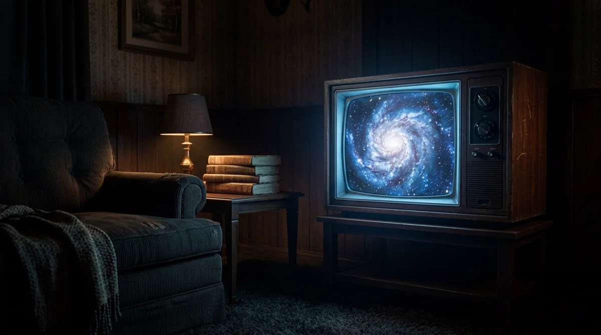

ouvir depois do piloto
Quem foi Carl Sagan
De onde veio o Calendário Cósmico.
O livro de 1977 e a série Cosmos, de 1980. Por que Sagan fez a conta com quinze bilhões de anos, e o que muda em cada data quando a régua passa a ser a de hoje.
extra 1 de 5
em produção